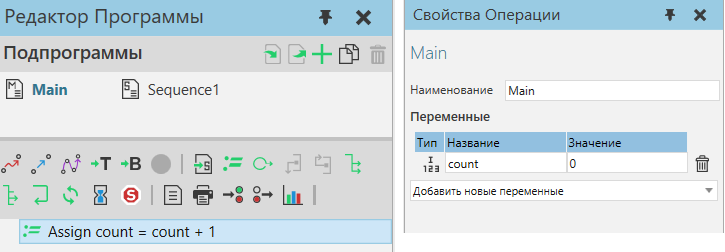
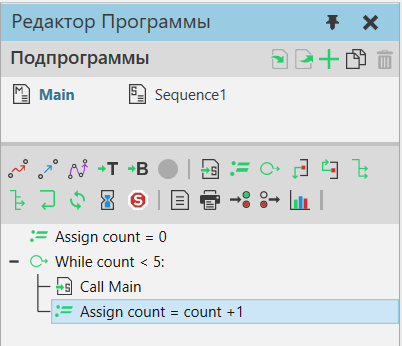
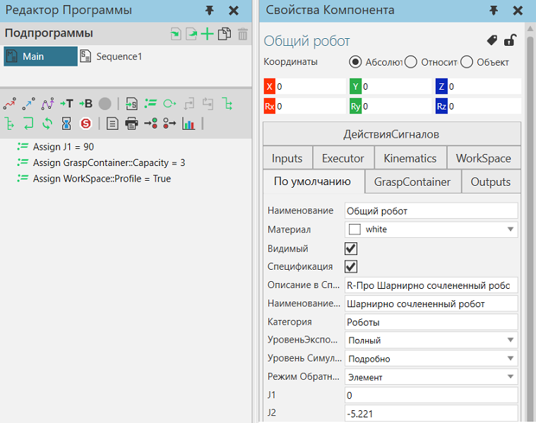

Оператор Присвоить переменную устанавливает значение переменной робота.

Переменные робота
Стандартные переменные
Переменная подпрограммы робота — это локальная переменная в программе робота, относящаяся к подпрограмме. Например, переменная в основной процедуре Main может быть установлена и использована только в процедуре Main.

Переменные программы
Программная переменная — это свойство и глобальная переменная программы робота. Вы можете добавлять переменные программы с помощью API. Например, вы можете добавить глобальную переменную счетчика в vcProgram объект и использовать его в основной процедуре и подпрограммах этой программы.
from vcScript import *
comp = getComponent() robotExecutor = comp.findBehaviour("Executor") robotProgram = robotExecutor.Program
#найти или создать глобальный счетчик в программе робота counter = robotProgram.getProperty("count") if not counter: counter = robotProgram.createProperty(VC_INTEGER, "count") |

Свойства компонента
Свойство компонента — это глобальная переменная робота и его программы. На свойство по умолчанию или общее свойство можно ссылаться по имени, тогда как на сгруппированное свойство необходимо ссылаться с использованием синтаксиса <group name>::<property name>.

Свойства
Название |
Описание |
|---|---|
ЦелевоеСвойство |
Определяет наименование переменной для присвоения значения. |
ВыражениеЗначения |
Определяет выражение, которое при оценке возвращает значение для присвоения ЦелевоеСвойство. |